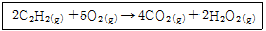
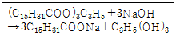
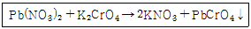

화학분석기능사 (2006-07-16 기출문제)
1과목: 일반화학
1. 어떤 기체의 공기에 대한 비중이 약 1.10 이었다. 이것은 어떤 기체의 분자량과 같은가? (단, 공기의 평균 분자량은 29이다.)
- H2
- O2
- N2
- CO2
(정답률: 85%)

2. 다음 중 산화환원 반응이 아닌 것은?
- 2Na + 2H2O → 2NaOH +H2
- N2 + 3H2 → 2NH3
- 2H2S +SO2 → 3S +2H2O
- [Ag(NH3)2]Cl +2HNO3 → AgCl +2NH4NO3
(정답률: 73%)
3. 펜탄(C5H12)의 구조이성질체 수는 몇 개 인가?
- 2
- 3
- 4
- 5
(정답률: 83%)
4. 전기 음성도의 크기 순서로 옳은 것은?
- Cl ＞ Br ＞ N ＞ F
- Br ＞ Cl ＞ O ＞ F
- Br ＞ F ＞ Cl ＞ N
- F ＞ O ＞ Cl ＞ Br
(정답률: 87%)
5. 다음 과정 중 화학반응이 일어나는 것은?
- 승화
- 응용
- 증발
- 발효
(정답률: 82%)
6. 다음 물질의 일반식과 그 명칭이 옳지 않은 것은?
- R-O-R' → 알코올
- R2CO → 케톤
- R-CO2-R' → 에스테르
- RCHO → 알데히드
(정답률: 85%)
7. 산의 성질에 대한 설명으로 옳지 않는 것은?
- 양성자를 줄 수 있는 물질
- 비공유 전자쌍을 받을 수 있는 물질
- 전리 분리해서 +극에서 산소 발생
- 리트머스시험지를 청색에서 적색으로 변화
(정답률: 64%)
8. 다음 탄화수소 중 알켄 족 화합물에 속하는 것은?
- 벤젠
- 시클로헥산
- 아세틸렌
- 프로필렌
(정답률: 55%)
9. 당량에 대한 정의로서 옳은 것은?
- 분자량의 절반
- 원자가 × 원자량
- 표준온도와 표준압력에서 22.4L의 무게
- 어떤 원소가 수소 1과 결합 또는 치환할 수 있는 원소의 양
(정답률: 82%)
10. 돌턴의 원자설에 대한 설명 중 가장 거리가 먼 내용은?
- 물질은 분자라고 하는 더 이상 쪼갤 수 없는 작은 입자로 구성 되어 있다.
- 원소에서 화합물이 생길 때 각 원소의 원자는 간단한 정수비로 결합한다.
- 원자는 화학변화를 일으킬 때 새로 생성되지도 않고 소멸되지도 않는다.
- 주어진 원소의 원자들은 질량과 모든 성질에서 동일하다.
(정답률: 78%)
11. 다음 금속 중 비중이 제일 작은 금속은?
- Mg
- Au
- Fe
- Cu
(정답률: 76%)
12. 용기 속에 들어 있는 액체 프로판 1㎏을 표준상태의 가스로 기화하였을 때 몇 L 가 되는가? (단, 이상기체의 거동을 한다고 가정한다.)
- 200
- 509
- 710
- 1,029
(정답률: 63%)
13. 압력이 일정할 때 50℃에서 몇 ℃ 로 올리면 기체의 부피가 2배로 되겠는가?
- 50℃
- 273℃
- 373℃
- 383℃
(정답률: 79%)
14. 아세틸렌의 연소반응식이 아래와 같다. 이때 아세틸렌 104g 을 완전 연소하는데 몇 g 의 산소가 필요한가? (단, C, H, O 의 원자량은 12, 1, 16 이다.)

- 80g
- 160g
- 320g
- 640g
(정답률: 58%)
15. 7.40g의 물을 29.0℃에서 46.0℃로 온도를 높이려고 할 때 필요한 에너지(열)는 몇 J 인가? (단, 물(L)의 비열은 4.184(J/gㆍ℃)이다.)
- 3⑤.13
- 416.24
- 526.35
- 627.46
(정답률: 68%)
16. 어떤 기체 XO2 와 CH4 의 확산속도의 비는 1 : 2이다. X의 원자량은? (단, C, H, O의 원자량은 12, 1, 16이다.)
- 12
- 16
- 32
- 64
(정답률: 71%)
17. 표준상태(0℃, 1atm)에서 H2 1몰의 부피는 22.4L이다. 표준상태에서 N2 1몰의 부피는 몇 L 인가?
- 11.2
- 22.4
- 44.8
- 28
(정답률: 87%)
18. pH가 8.3 이하에서는 무색이고 10 이상에서는 붉은색으로 변색되는 지시약은?
- PP(페놀프탈레인)
- MO(메틸오렌지)
- MR(메틸레드)
- TB(티몰블루)
(정답률: 88%)
19. 다음 물질 중 밀도가 가장 큰 것은?
- H2
- O2
- Cl2
- CO2
(정답률: 69%)
20. 중크롬산칼륨(K2Cr2O7)에서 크롬의 산화수는?
- 2
- 4
- 6
- 8
(정답률: 79%)
2과목: 분석화학
21. 나프탈렌의 분자식은?
- C6H6
- C10H8
- C14H10
- C20H22
(정답률: 71%)
22. 다음 물질 중 무극성 분자에 해당되는 것은?
- HF
- H2O
- CH4
- NH3
(정답률: 60%)
23. 다음은 무슨 반응인가?

- 중화
- 산화
- 비누화
- 에스테르화
(정답률: 75%)
24. 주기율표에 대한 설명으로 가장 거리가 먼 내용은?
- 같은 주기에 있는 원자들은 모두 전자껍질수가 같다.
- 0족 원소(비활성기체)는 주기율표의 가장 오른쪽 줄에 있다.
- 제2주기에는 10종류의 원소가 들어 있다.
- 같은 족에 있는 원자들은 모두 원자가전자수가 같다.
(정답률: 75%)
25. 알칼리금속에 대한 설명으로 가장 거리가 먼 내용은?
- 공기 중에서 쉽게 산화되어 금속광택을 잃는다.
- 원자가전자가 1개이므로 +1가의 양이온이 되기 쉽다.
- 할로겐원소와 직접 반응하여 할로겐화합물을 만든다.
- 염소와 1:2 화합물을 형성한다.
(정답률: 88%)
26. 다음 물질 중 전해질에 해당하는 것은?
- 소금
- 설탕
- 포도당
- 에탄올
(정답률: 62%)
27. 다음 유리기구 중 액체 물질의 용량을 측정하는 용도로 주로 쓰이지 않는 것은?
- 메스플라스크
- 뷰렛
- 피펫
- 분액깔대기
(정답률: 83%)
28. 0.49g의 황산을 물100ml에 녹였다. 이를 0.1N NaOH 수용액으로 적정하려 할때, 0.1N NaOH 수용액의 예상소요량은? (단, 황산의 분자량은 98이다.)
- 25ml
- 50ml
- 100ml
- 200ml
(정답률: 62%)
29. 중화 적정시 물속에 함유되어 분석에 가장 큰 영향을 주는 가스는?
- N2
- O2
- CH4
- CO2
(정답률: 55%)
30. 황산제일철을 산성용액 중에서 KMnO4표준용액으로 적 정할 때 0.1N KMnO4 1L를 조제하는데 필요한 순수한 KMnO4의 양은? (단, 의 분자량은 158.03 이다.)(오류 신고가 접수된 문제입니다. 반드시 정답과 해설을 확인하시기 바랍니다.)
- 1.580g
- 3.161g
- 5.268g
- 15.803g
(정답률: 46%)
31. 다음 중 용액의 전리도(α)를 바르게 나타낸 것은?
- 전리된 몰농도 / 분자량
- 분자량 / 전리된 몰농도
- 전체 몰농도 / 전리된 몰농도
- 전리된 몰농도 / 전체 몰농도
(정답률: 90%)
32. Sr 의 불꽃반응에서 불꽃 색깔은?
- 노랑
- 빨강
- 연두
- 청록
(정답률: 68%)
33. 아래 반응에서 침전물 색깔은?

- 검은색
- 빨간색
- 흰색
- 노란색
(정답률: 61%)
34. 전해질의 전리도 비교는 주로 무엇을 측정하여 구할 수 있는가?
- 용해도
- 어는점 내림
- 융점
- 중화적정량
(정답률: 68%)
35. 고체의 용해도에 대한 설명 중 가장 거리가 먼 것은?
- NaCl의 용해도는 온도에 따라 큰 변화가 없다.
- 일반적으로 고체는 온도가 상승하면 용해도가 커진다.
- 일반적으로 고체는 압력이 높아지면 용해도가 커진다.
- KNO3은 용해도가 온도에 따라 큰 차이가 있다.
(정답률: 62%)
36. 산화ㆍ환원 적정법 주의 하나인 과망간산칼륨 적정은 주로 산성용액 상태에서 이루어진다. 이 때 분석액을 산성화하기 위하여 주로 사용하는 산은?
- 황산(H2SO4)
- 질산(HNO3)
- 염산(HCl)
- 아세트산(CH3COOH)
(정답률: 69%)
37. 양이온 제 4족의 암모니아성 시료용액에 디메틸글리 옥심의 알코올성 용액을 1방울씩 넣으면 빨간색의 결정성 침전물을 얻는다. 이는 어느 이온을 확인하기 위한 것인가?
- Mn2+
- Co2+
- Ni2+
- Zn2+
(정답률: 76%)
38. 산과도 반응하고 염기와도 반응하는 양쪽성 원소는?
- Sn
- Si
- P
- S
(정답률: 65%)
39. 양이온 제1족을 구분하는데 주로 쓰이는 분족시약은?
- HCl
- H2S
- NH4Cl + NH4OH
- (NH4)2CO3
(정답률: 71%)
40. 다음 중 알데히드 검출에 주로 쓰이는 시약은?
- 밀론 용액
- 비토 용액
- 페엘링 용액
- 리이베르만 용액
(정답률: 71%)
3과목: 기기분석
41. 수은을 바닥에 떨어뜨렸을 때 가장 적절한 조치사항은?
- 빗자루로 쓸어 담아 일반 하수구에 버린다.
- 수은은 인체에 무해하므로 그대로 두어도 무방하다.
- 흙이나 모래 등을 가하여 수은을 흡착시킨 후 일반 하수구에 버린다.
- 주위에 아연가루를 골고루 뿌리고 약 5%의 황산수용액으로 적셔 반죽처럼 되게 한 후 처리한다.
(정답률: 88%)
42. 적외선 분광광도계를 취급할 때 주의사항 중 옳지 않은 것은?
- 온도는 10 ~ 30℃가 적당하다.
- 습도는 크게 문제가 되지 않는다.
- 먼지와 부식성 가스가 없어야 한다.
- 강한 전기장, 자기장에서 떨어져 설치한다.
(정답률: 91%)
43. 다음 중 독성 시약이 아닌 것은?
- 수은염
- 염화나트륨
- 시안화물
- 비소화합물
(정답률: 84%)
44. 전자기 복사선 중 파장이 가장 긴 것은?
- 적외선
- 자외선
- X-선
- 가시광선
(정답률: 55%)
45. 가스크로마토그래피의 검출기 중에서 유기할로겐 화합물, 니트로화합물, 유기금속 화합물을 선택적으로 검출할 수 있는 검출기는?
- 열전도도 검출기(TCD)
- 수소염이온화 검출기(FID)
- 전자포획형 검출기(ECD)
- 염광광도형 검출기(FPD)
(정답률: 56%)
46. 파장이 10-3m 인 것을 주파수(㎝-1)로 환산하면?
- 10
- 100
- 1,000
- 10,000
(정답률: 53%)
47. 전기전도도법에 대한 설명 중 가장 거리가 먼 내용은?
- 같은 전도도를 가진 용액은 구성성분과 농도가 같다.
- 전류가 흐르는 정도는 이온의 수와 종류에 따라 다르다.
- 전도도는 이온의 농도 및 이동도(mobility)에 따라 다르다.
- 적정을 통해 많은 물질을 정량할 수 있는 전기화학적 분석법 중의 하나이다.
(정답률: 67%)
48. 다음 기기분석법 중 광학적 방법이 아닌 것은?
- 전위차 적정법
- 분광분석법
- 적외선분광법
- X선 분석법
(정답률: 81%)
49. 기체-액체 크로마토그래피(GLC)에서 정지상과 이동상을 올바르게 표현한 것은?
- 정지상 - 고체, 이동상 - 기체
- 정지상 - 고체, 이동상 - 액체
- 정지상 - 액체, 이동상 - 기체
- 정지상 - 액체, 이동상 - 고체
(정답률: 86%)
50. 원자흡수분광법에서 주로 사용하는 광원은?
- 중수소 램프(D2 Lamp)
- 텅스텐 램프(W Lamp)
- 속빈 음극 램프(Hollow Cathode Lamp)
- 글로바(Globar) 방전관
(정답률: 58%)
51. HPLC(고성능액체크로마토그래피)가 갖추어야 할 조건으로 가장 거리가 먼 것은?
- 펌프 내부는 용매와 화학적 상호 반응이 없어야 한다.
- 최소한 5,000psi의 고압에 견디어야 한다.
- 펌프에서 나오는 용매는 펄스가 일정해야 한다.
- 기울기 용리가 가능해야 한다.
(정답률: 54%)
52. 전해분석에서 과산화물로 주로 석출되는 금속은?
- Cu
- Pb
- Si
- Sn
(정답률: 52%)
53. 분광광도계 실험시 검량선을 작성하기 위하여 1,000ppm 표준용액을 사용하여 20ppm의 표준용액 100ml을 만들고자 한다. 다음 중 제조방법이 올바른 것은?
- 1000ppm 표준용액 0.02ml를 100ml 메스플라스크에 넣고 증류수로 표선까지 맞춘다.
- 1000ppm 표준용액 0.2ml를 100ml 메스플라스크에 넣고 증류수로 표선까지 맞춘다.
- 1000ppm 표준용액 2ml를 100ml 메스플라스크에 넣고 증류수로 표선까지 맞춘다.
- 1000ppm 표준용액 20ml를 100ml 메스플라스크에 넣고 증류수로 표선까지 맞춘다.
(정답률: 70%)
54. 0.01M NaOH 용액의 pH는 얼마인가?
- 9
- 10
- 11
- 12
(정답률: 76%)
55. 횡파의 빛을 니콜 프리즘에 통과시키면 일정한 방향으로 진동시키는 빛을 얻는데 이것을 무엇이라 하는가?
- 편광
- 전도
- 굴절
- 분광
(정답률: 63%)
56. Cd(s) + 2AgCl(s) ⇄ Cd2+(aq) + 2Ag(s) + 2Cl-(aq)의 전 지반응에서 Cd의 ∆G는 -150kJ/㏖이다. 이 때 전위차계 에서 측정되는 전압은? (단, 1F은 96,500C의 전기량과 같다.)
- +0.259V
- +0.389V
- +0.777V
- +1.554V
(정답률: 58%)
57. 기체크로마토그래피에 사용하는 운반기체로 적당하지 않는 것은?
- He
- N2
- H2
- Cl2
(정답률: 72%)
58. 전해분석 방법 중 폴라로그래피(Polarography)에서 작업 전극으로 주로 사용하는 전극은?
- 포화 칼로멜 전극
- 수은 적하 전극
- 백금 전극
- 유리막 전극
(정답률: 47%)
59. 전위차 전극법에서 보조전극으로 주로 사용되는 전극은?
- 수소전극
- 백금전극
- 카로멜 전극
- 퀸히트론전극
(정답률: 56%)
60. 크로마토그래피에서 컬럼 효율은 일반적으로 이론단수(N)로 나타낸다. 다음 중 N 값에 영향을 주는 요인 중 무시할 수 있는 것은?
- 실험실 온도
- 컬럼 제작방법
- 이동상의 흐름속도
- 분리온도
(정답률: 64%)